Elliot Warren
Since 2009 I've been tinkering with computers and electronics — building custom PCs (including my current main rig, built in 2021) and programming microcontrollers like Arduino and Raspberry Pi for fun, useful projects.
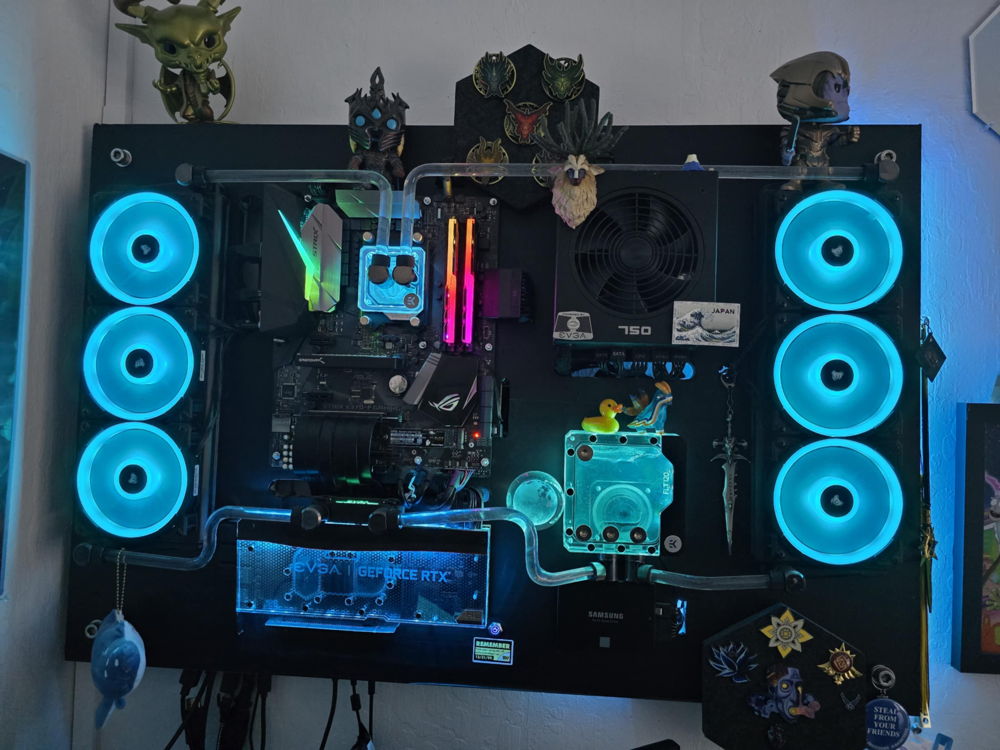

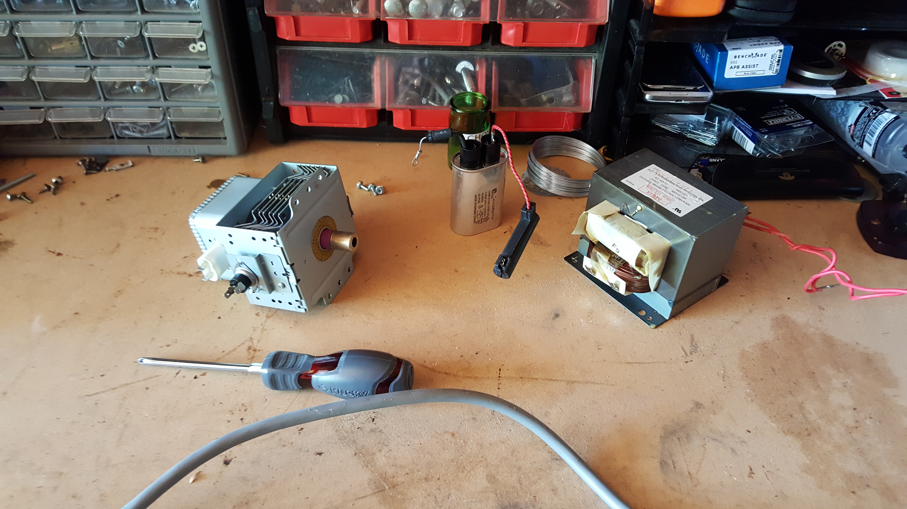
I'm a huge aquarium nerd. I currently keep a 55-gallon freshwater tank, a 5-gallon nano tank, and two 3-gallon shrimp tanks. My first 55-gallon tank at age 14 showed me the joy of balancing a small ecosystem.
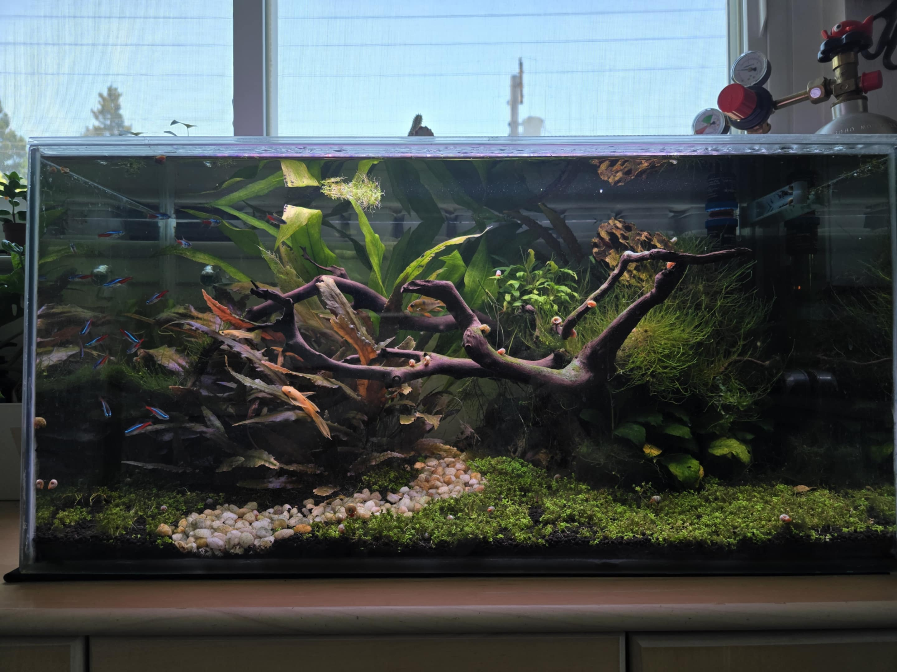
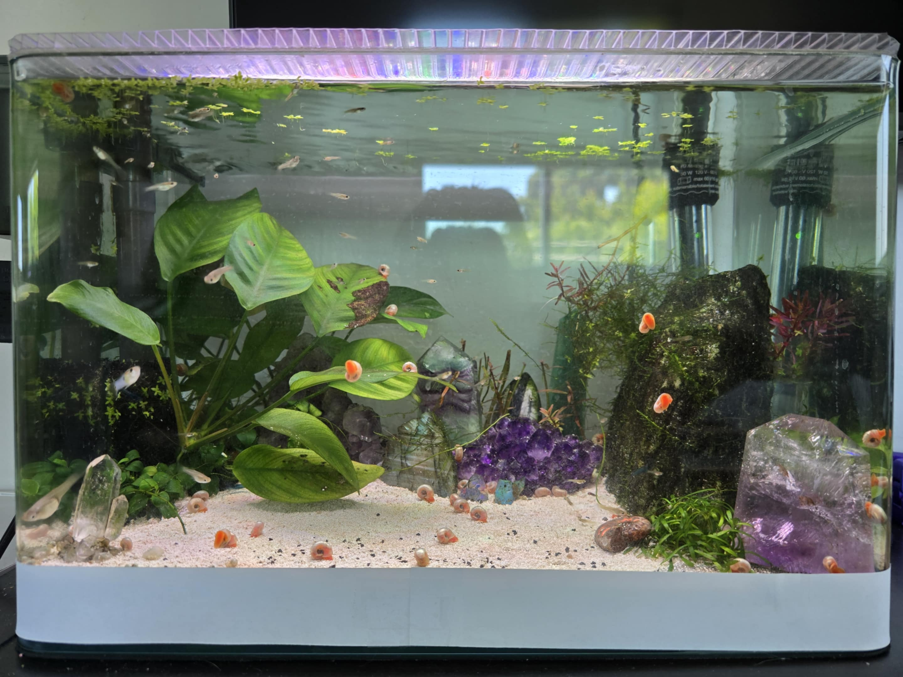
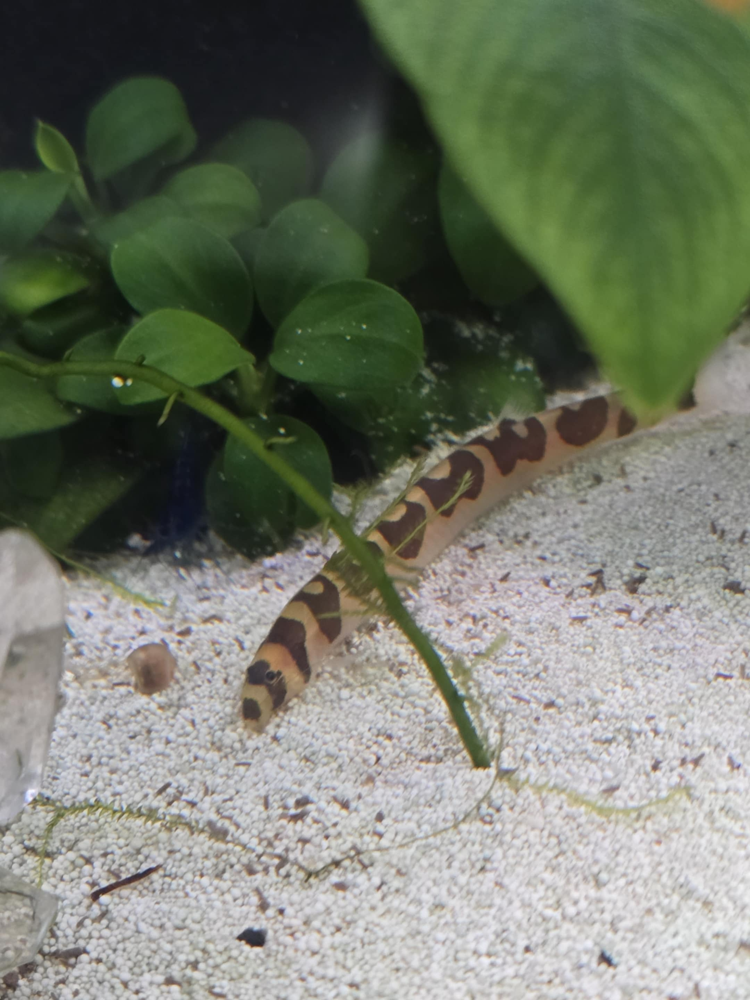
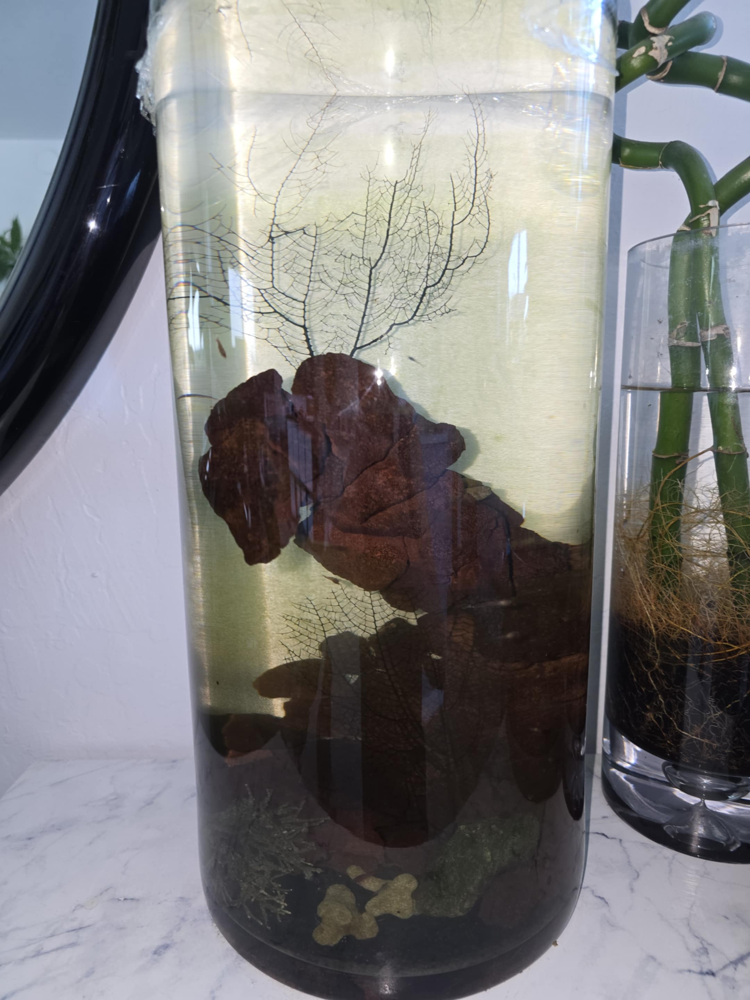
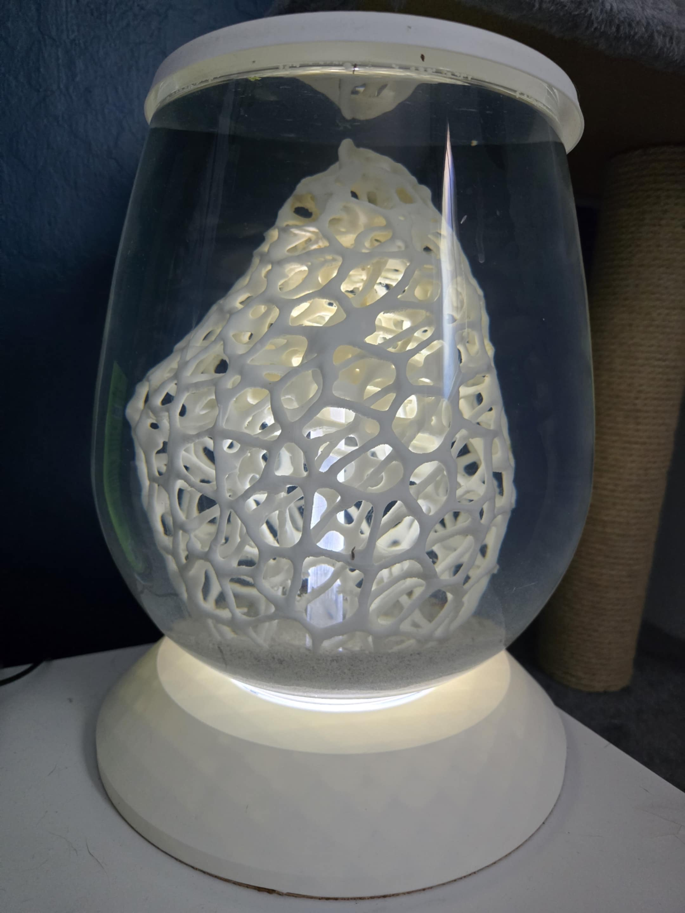
I've always had pets. Right now I have two cats — Tora and Maru — and a dog, Kota. Tora is a reclusive tabby who only cuddles with me; Maru is a curious Siamese who plays fetch; Kota is a miniature poodle who loves roughhousing and treats.
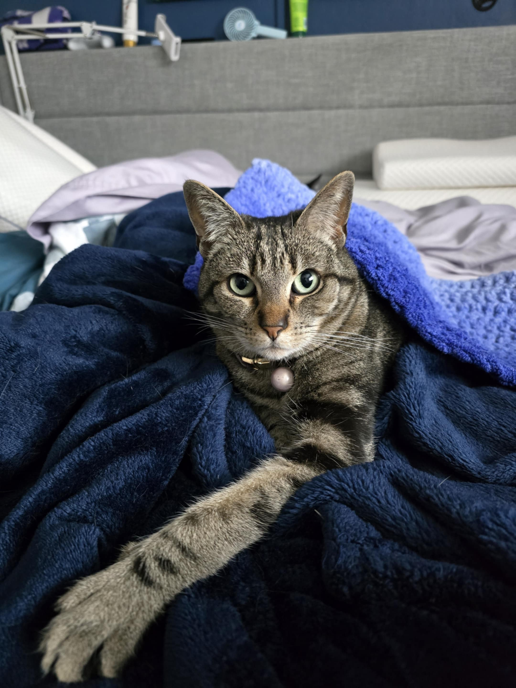
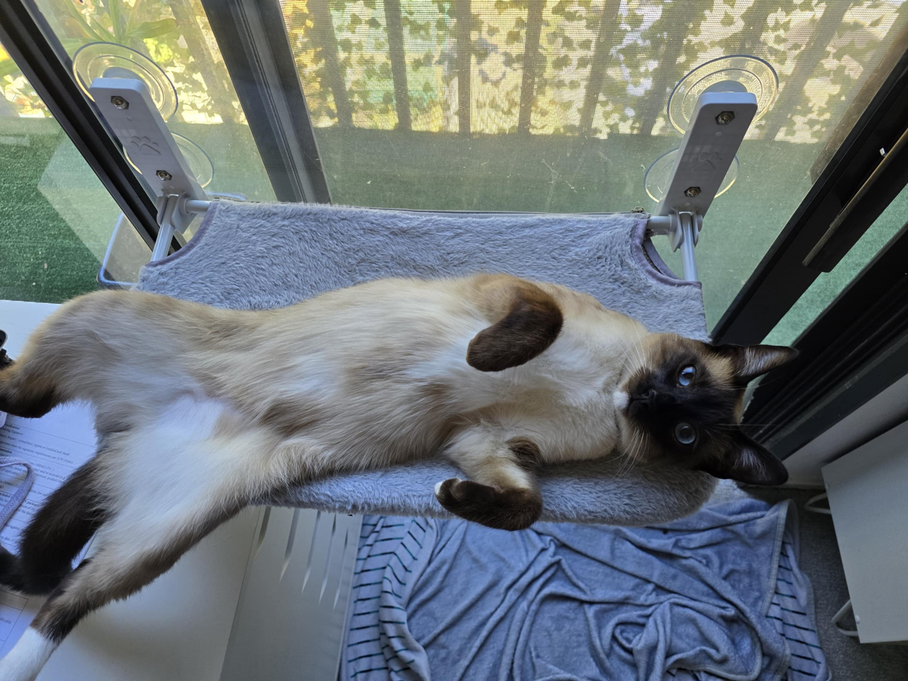
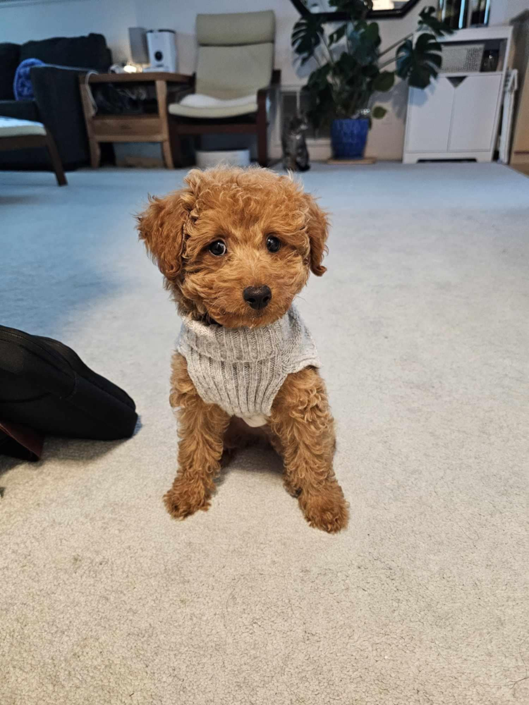
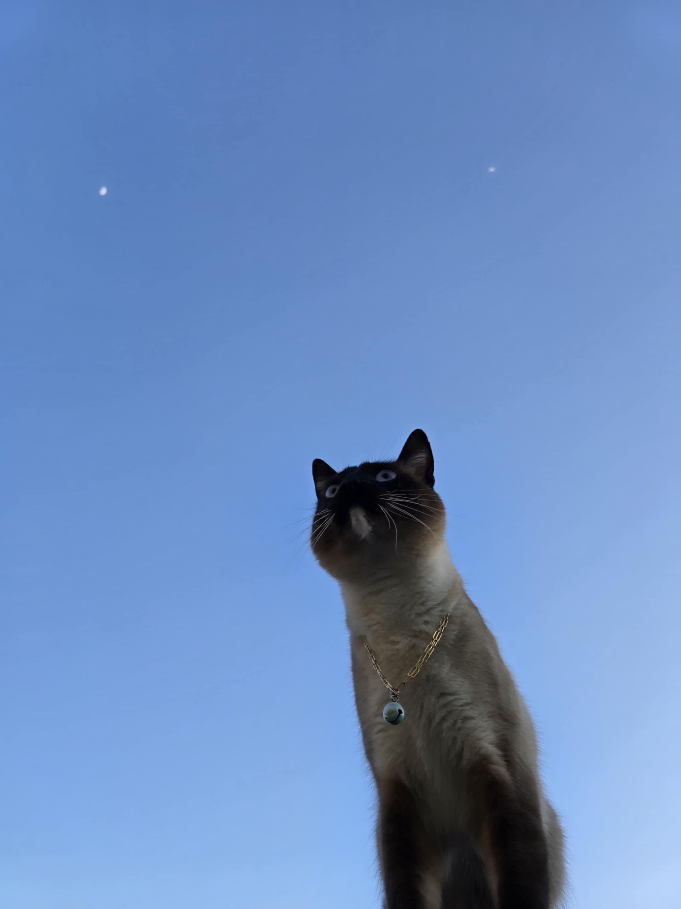